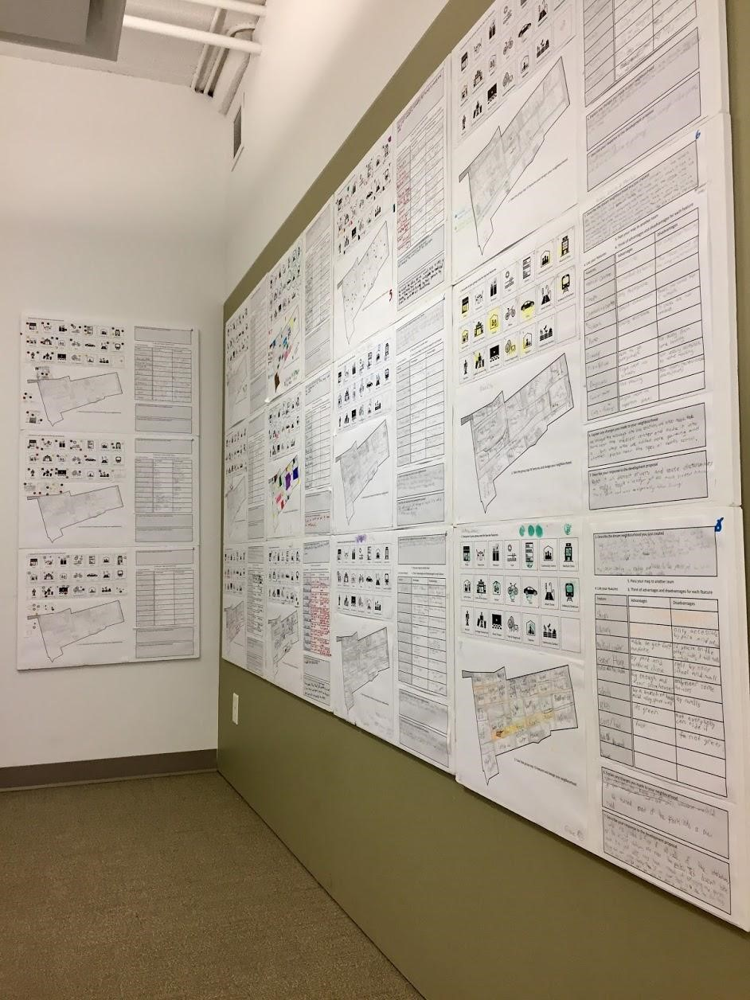

Co-designing Inclusive Cities
Ideas in Progress

School Co-Design Activity Results
As part of our efforts to include diverse perspectives in creation of inclusive cities, IDRC organized an embedded co-design session in elementary and middle schools with grade 3, 5, and 6 students. The co-design activity was developed in collaboration with the classroom teachers and parents to tailor the activity to the interests and needs of the children. To complete this activity the teachers were provided with the required materials and instructions to conduct the co-design activity in their own classrooms. For further details regarding this activity please visit the Students co-designing their dream neighbourhoodspost
The overarching themes that emerged from the results shows that environmentally friendliness, accessibility, and inclusivity of neighbourhoods were important factors for students in all three grades. Making the neighbourhood accessible for people of all ages was particularly important to the grade 5 and 6 students and they included features that encompass all age groups. Grade 5 and 6 students included at least one senior home and one medical centre in their neighbourhood. Most of them also included parks and playgrounds. On their neighbourhood maps, parks were either large and located in central areas or smaller and spread out throughout the neighbourhood. In most cases, parks were surrounded by other public or private services such as schools, daycare, libraries and housing. Most of grade 5 and 6 students also included several libraries in their neighbourhoods. The results also showed that both grades included subways and streetcars for transportation, however, grade 6 groups included these features more often than grade 5 groups.
As part of this activity, students were given blank cards to add their own features to their neighbourhood. Some of the interesting extra features added to these maps include religious centres, airports, banks, gyms, and stadiums. Grade 3 students added more extra features than their peers in grade 5 and 6, and most of their features were supporting fun and recreational activities, such as arcades, amusement parks, and gyms.
Grade 3 students completed the first section of the activities. The grade 5 and 6 groups completed all three sections of the activity. In response to the development proposal, most grade 5s accepted the proposal with changes, however, most grade 6 groups rejected the proposal mainly because of concerns due to privacy and excessive screen time. Almost everyone across both grades expressed worry about privacy, and a few groups suggested time limits for access. Interestingly none of the groups accepted the proposal without changes.
